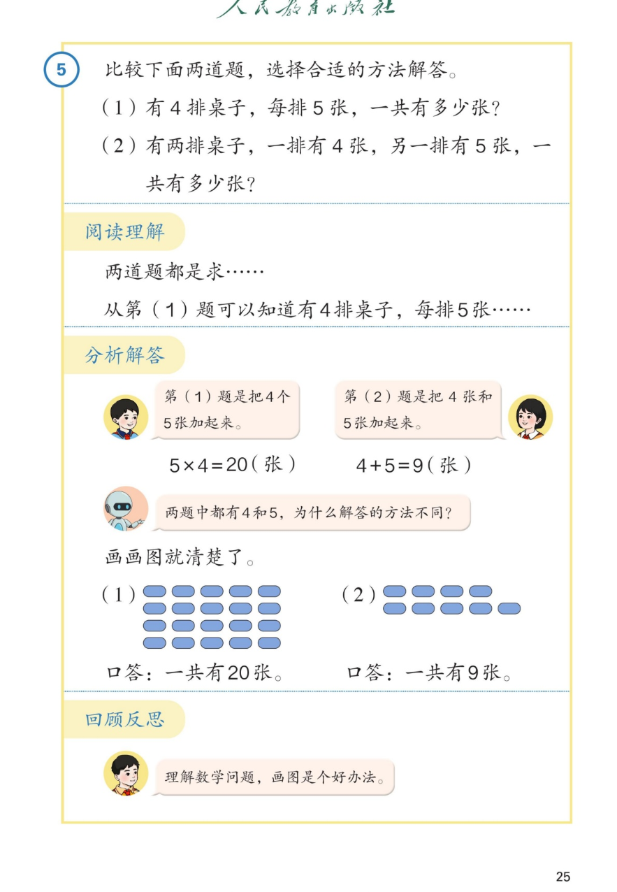

🔊 1~6的表内乘法 · 课本第 25 页 · 解决问题：比较两道题
人教版《数学》二年级上册 · 有声图文带读 · 先想后看解析
题数
6
认知
2
强化
3
拓展
1
本页重点
同数连加用乘法·不同数相加用加法·画图比较
🎧 分两步学：
① 解析教材图片
——纯声音读图，读到哪一块哪一块闪动提示；关键处先倒计时让你思考，再在图片下方给出解析并朗读。
② 分层提问练习
——六道分层题（认知 / 强化 / 拓展），先思考再展开解析、朗读参考答案；这一步不再回到图片。
也可以随时点任意一句话、图上任意一块单独听；点课本文字卡还会展开答案。
教材图片（点块听读，读到哪块哪块闪）

📖 人教版《数学》二年级上册 · 课本第 25 页 · 图片仅供个人学习，版权归人民教育出版社所有
🤔 想一想（点我可跳过）
课本的文字（点句子：听读 + 看答案）
课本第 5 题
比较下面两道题：
（1）有 4 排桌子，每排 5 张
；（2）有两排桌子，一排 4 张、另一排 5 张。各求一共多少张？
看答案 ▾
两道题
都是求一共有多少张
，但条件不一样：
（1）
4 排、每排 5 张 —— 每份同样多；
（2）
一排 4 张、一排 5 张 —— 两份不一样多。
🌈 条件不同，选的方法就可能不同
阅读理解
两道题都是求……第（1）题知道 4 排、每排 5 张；第（2）题知道一排 4 张、另一排 5 张。
看答案 ▾
读题三问：
求什么？（一共多少张）
知道什么？（排数和每排张数）
每份同样多吗？（(1) 同样多，(2) 不同样多）
分析解答（1）
第（1）题是把 4 个 5 张加起来：
5×4=20（张）
看答案 ▾
5×4=20
（张），口诀
四五二十
。
4 排、每排 5 张，就是
4 个 5
相加——加数相同，用乘法。
🌈 写成 4×5=20 也对
分析解答（2）
第（2）题是把 4 张和 5 张加起来：
4+5=9（张）
看答案 ▾
4+5=9
（张）。
一排 4 张、一排 5 张，两部分
不一样多
，不是几个几，只能用加法合起来。
想一想
两题中都有 4 和 5，为什么解答的方法不同？画画图就清楚了。
看答案 ▾
关键看
每份是不是同样多
：
（1）4 排、每排都是 5 张 →
4 个 5
→ 乘法；
（2）一排 4 张、一排 5 张 → 两部分不同 → 加法。
口答
口答：一共有 20 张；口答：一共有 9 张。
看答案 ▾
（1）
5×4=20，口答：一共有
20
张；
（2）
4+5=9，口答：一共有
9
张。
🌈 口答别忘了写单位"张"
回顾反思
理解数学问题，画画是个好办法。
看答案 ▾
画图
能把"藏在字里"的条件摆出来：
每排同样多 → 画成整齐的几排 → 乘法；
每排不一样 → 画成不同的两部分 → 加法。
分层提问练习（先想后看解析）
🪑
认知
第（1）题怎样列式？为什么用乘法？
看解析
🤔 想一想
解析：
5×4=20（张），口诀四五二十
💡 4 排、每排 5 张 = 4 个 5 相加，加数相同用乘法
➕
认知
第（2）题怎样列式？为什么用加法？
看解析
🤔 想一想
解析：
4+5=9（张）
💡 4 张和 5 张不一样多，不能乘，只能合起来
🔍
强化
两道题都有 4 和 5，为什么方法不同？
看解析
🤔 想一想
解析：
（1）4 排 × 每排 5 张 → 每份同样多 → 乘法
（2）4 张 ＋ 5 张 → 两份不同 → 加法
💡 数字相同，意思不同：先判断"每份是否同样多"
🎨
强化
两幅图有什么不一样？看图说一说。
看解析
🤔 想一想
解析：
图（1）：4 排，每排 5 个，整整齐齐 = 4 个 5
图（2）：只有两排，一排 4 个、一排 5 个
💡 画图让"同样多"看得见
🗣️
强化
两道题的口答各是什么？怎样回答才完整？
看解析
🤔 想一想
解析：
（1）5×4=20（张）。口答：一共有 20 张。
（2）4+5=9（张）。口答：一共有 9 张。
💡 完整回答 = 算式 + 得数 + 单位 + 口答
🌈
拓展
编一道"每份同样多"的题，用乘法解决。
看解析
🤔 想一想
解析（开放题）：
示例：
每盘放 5 个苹果，放了 3 盘，一共多少个？5×3=
15
（个）
示例：
每盒有 6 支铅笔，买 4 盒，一共多少支？6×4=
24
（支）
🌈 只要"每份同样多"，就能用乘法
① 解析教材图片
② 分层提问练习
⏹ 停止
纯声音 + 高亮跟随 · 想好才出解析
← 返回导航